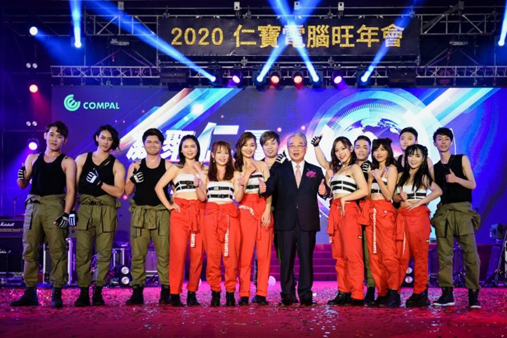
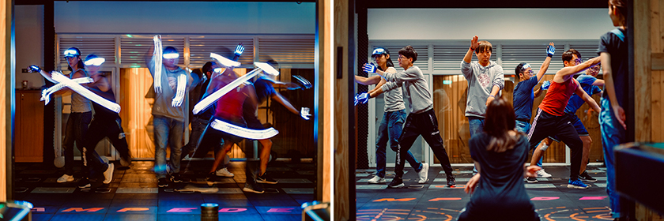
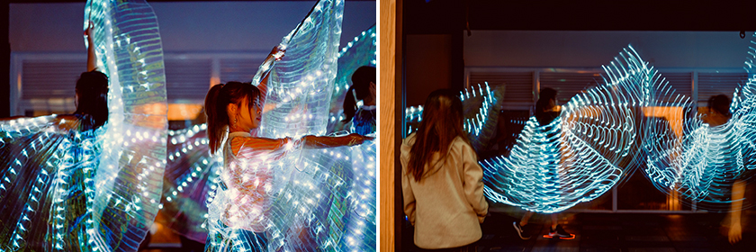

【尾牙舞台，最純粹的舞動】
蘇治佳│策略採購本部 \ 電子策略採購處 \ 電子策略採購部
|  |
回想起站在舞台中央燈光與紙花灑落的那畫面，滿身汗水與周遭同伴的呼吸聲，心不禁激昂起來，回到最初的開始是踏入仁寶白色大樓跳舞的第一次。
剛進入社會的我有點小不適應職場的生活，不像就學時期的氛圍也說不上哪裡不同，只知道周遭人們或多或少被壓力逼著成長並在當中調適著自己，每個人盡力達到主管的期待老闆的目標，但久了... 好似有點找不回最初的衷心與熱情，回應不了內心深處的自己真的想要什麼，在這迷茫之際參加了2016年的旺年會員工表演活動，不同的部門不同的位階不同的思考，大家只為了一個目標一個合作不求回報的舞台。那時候受到舞團同事很大的鼓勵，不是物質部分是純粹願意付出帶給大家正能量的氛圍。
|  |
今年2020旺年會以往的夥伴因追尋理想與夢想陸續啟程，擔起副班長職務的我才知道福委與之前有職務在身的同伴多無私多幫忙，學習與排練時間越來越少但好似達不到心中的畫面， 有點緊張又擔心的我被班長開導被團員安慰，回想起練舞的每一刻大家盡自己的努力，不是跳完回去加班就是加班再來練習，害怕的不會的動作都克服了! 那是不是像是專業舞者跳出的畫面感又如何，當然現在說都很輕鬆當下內心的掙扎與調適是無法言語形容。真的感謝今年的團員們在這麼忙碌的年末，願意將自己的時間留在這，一起為表演項目努力。
|  |
跳舞就是這麼有魅力，可以好好表達內心的感受，可以展現各種情緒，同一支舞每個人跳起來都不同，單獨看與一起跳也不同，把學到的用在工作上，各單位因職務不同故有所摩擦但大家也不就是為了同一個目標，讓公司更好成為客戶的首選。
我愛跳舞，也愛你們。謝謝你們參與我人生片段成為照亮前進的光芒，也希望給尾牙相遇的夥伴一點溫暖驅逐偶爾內心的烏雲。